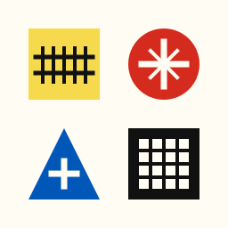
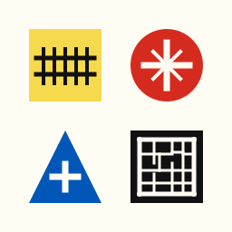
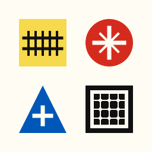
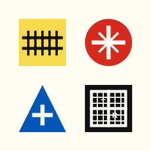
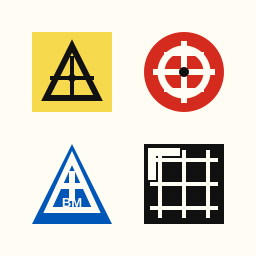

A selected composite that keeps the Bauhaus grid and uses four recognizable historic map symbols.

Selected CompositeRailroad square, spot elevation without numbers, blue bench mark triangle with only the white plus, and a uniform inverted township index.
Township Grid Alternatives

A. Irregular PlatParcel-like cadastral blocks with corner monuments instead of repeated rail ties.

B. Section CornersThin section lines with a strong outer township boundary and corner dots.

C. Township/RangePLSS-style frame with thinner subdivisions and compact T/R marks.D. Inverted IndexUniform cream township index panel inside the black square for stronger contrast from rail.
Earlier Studies

1. Survey ControlTriangulation station, control disk, USGS-style bench mark, and township grid.